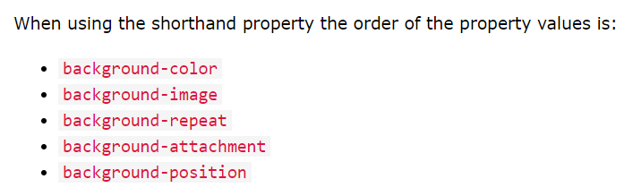

CSS Properties
DodgerBlue
MediumSeaGreen
slateBlue
Tomato Orange
Background
1.Color-Background
Tile 1
Tile 2
Tile 3
Tile 4
2.Background Clip
Full Background
Padding Background
Content Background
Tile 4
3.Background Image Map Attribut(Click anywhere on link)

Normal border
Dashed Border
Dotted Border
Double Border
Ridge border
Inset Border
Outset Border
Left side Border
Margin
margin:0px 5px 10px (3 values)
margin-top:0px
margin-left,margin-right:5px
margin-bottom:10px
- What is margin-collapse?
- If
h1 tag has 30px margin-bottom and h2 next tag has 20 margin-top. Then margin will be collapsed and the result will be 30px(which is maximum of 2 values).
Padding
- Padding and Element width
- If both
element width and padding is there. both width and padding values will be added
Outline
- What is outline
Outline is the line drawn outside element border
Example:
Normal Outline (red color)
offset outline